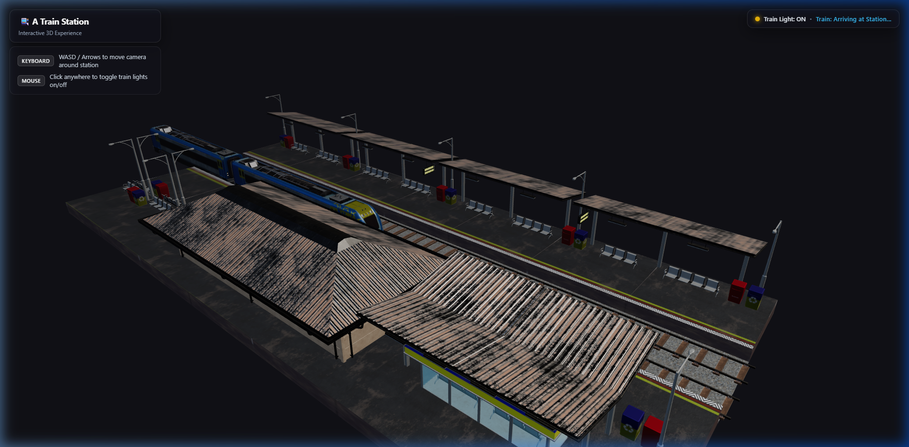
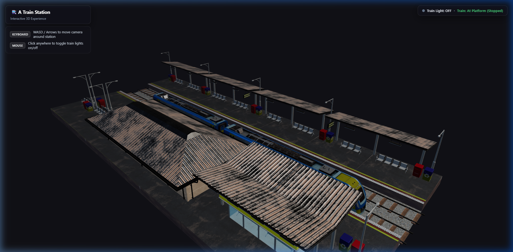
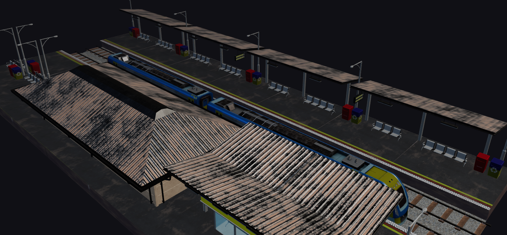
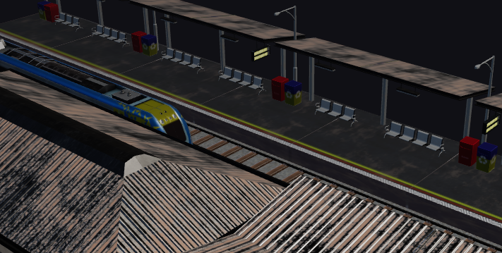
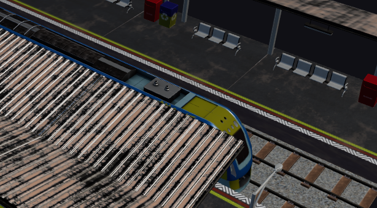
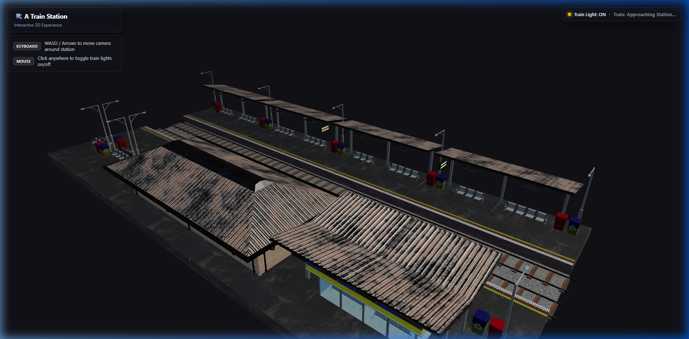
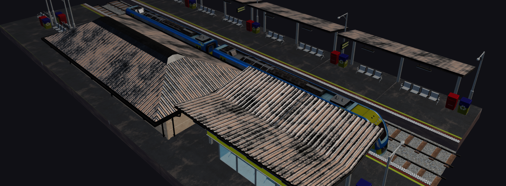

| Submitted By: | |
|---|---|
| Azizul Hakim Fayaz | 2023100010209 |
| Jakaria Kabir Provat | 2023100010203 |
| Shourov Sarkar | 2023100010093 |
The primary goal of this project is to render an interactive 3D train station scene centered on a passenger train, station platform, tracks, and waiting facilities using Three.js. The project must fulfil the following general requirements: 3D model loading and texture mapping, lighting, perspective projection, realistic shadows, multi-stage animation, and mouse and keyboard interaction.
Project-specific requirements:
| Tool / Technology | Purpose |
|---|---|
| Three.js (v0.186) | 3D rendering library built on WebGL |
| JavaScript (ES modules) | Scene logic, animation, keyboard/mouse interaction and event handling |
| GLTFLoader | Loading high-fidelity 3D glTF/GLB models (Station.glb, Engine.glb, wagon.glb) |
| OrbitControls | Interactive camera orbiting, damping, rotation, and distance clamping |
| HTML5 / CSS3 | HUD overlay, status badges, instructions card, and responsive canvas layout |
| Vite (v8.3) | Development server and high-speed production module bundler |
| Netlify | Continuous deployment (CI/CD) and cloud web hosting |
| Node.js / npm | Package management and build scripts |
| Visual Studio Code | Source code editor and development environment |
All 3D models are structured into optimized glTF/GLB assets and loaded asynchronously into the Three.js scene graph. The station environment contains intricate meshes for the station shelter, roofing, corrugated iron sheets, platforms, tracks, waste bins, platform lights, and benches. Every object incorporates physically-based materials (PBR) with diffuse, roughness, metalness, and emissive properties.
| Object | Geometry | Texture and reason |
|---|---|---|
| Train Locomotive | Aerodynamic cab shell, bogies, front buffers, cowcatcher, dual headlights | PBR metallic blue and yellow paint textures, emissive headlight glass, glossy window panels. |
| Passenger Wagons | Articulated carriages, windows, bogies, suspension springs, and doors | Deep blue coach livery texture, glass windows, industrial steel roof texture. |
| Object | Geometry | Texture and reason |
|---|---|---|
| Station Platform & Canopy | Reinforced concrete platforms, textured tiles, corrugated roof panels | Weathered corrugated metal texture with rust accents, concrete slab diffuse map with yellow safety edge lines. |
| Railway Tracks | Steel parallel rails, wooden sleepers/ties, ballast gravel base | Ballast stone texture and rustic weathered steel rails for realistic physical track representation. |
| Platform Amenities | Benches, trash receptacles, informational boards, light poles | Powder-coated metal textures, glass panels, and plastic materials for authentic depot environment. |
Keyboard events are handled with keydown and keyup listeners tracking active keys in a state map. The camera orbits around a central focus point on the station. The arrow keys (or WASD keys) dynamically modify the spherical coordinates (theta for azimuth angle, phi for polar angle, and radius for zoom distance) relative to the target vector. The updated camera position vector is calculated in real time using Three.js Spherical.setFromVector3() and setFromSpherical(). Left/Right rotate the camera horizontally around the station, Up/Down zoom along the view ray, and Q/E adjust the elevation angle. The polar angle is clamped so the camera never clips through the ground. Key 'R' resets the camera position and focus target to the initial isometric overview.
| Key | Action |
|---|---|
| Left / Right Arrow (or A / D) | Rotate / orbit camera horizontally around the station |
| Up / Down Arrow (or W / S) | Move camera closer or farther (zoom in / zoom out along view ray) |
| Q / E | Tilt camera elevation up or down (pitch angle) |
| R | Reset camera view and target back to the initial isometric overview |
Math.sin(progress * π / 2)) until coming to a complete stop at the platform.position.z = 0) allowing passenger boarding, while HUD displays "Train: At Platform (Stopped)".1 - Math.cos(progress * π / 2)).Three lighting types are combined, and the Three.js MeshStandardMaterial uses a physically-based (PBR) lighting model where surface rendering depends on normals, lighting angles, roughness, and metalness:
Shadows are enabled with PCFSoftShadowMap for realistic soft edges, and ACESFilmicToneMapping ensures bright areas avoid harsh over-exposure.
Scene graph traversal automatically locates all light meshes and Light_Texture materials, caching their original emissive intensities. When toggled, the materials dynamically switch RGB values and emissive intensities between active and inactive states.
• Material Uniforms & State: The Light_Texture material uses dynamic emissive properties. When activated, emissive intensity is boosted to 6.0 with pure white RGB (1, 1, 1). When deactivated, RGB is set to (0, 0, 0) with zero intensity, giving a realistic power-off appearance.
• Atmospheric Depth: Configured with THREE.FogExp2 and dark charcoal clear color (0x111116) to seamlessly blend distant tracks and geometry into the horizon.
• High Performance: Configured with powerPreference: 'high-performance' and device pixel ratio clamped to 2.0 for smooth 60fps rendering across desktop and mobile devices.
| # | Features | Status |
|---|---|---|
| 1 | 3D Train Station Scene with Platform & Architecture | Implemented |
| 2 | Realistic Passenger Train (Locomotive & Wagons) | Implemented |
| 3 | Realistic PBR Materials & High-Res Textures | Implemented |
| 4 | Directional Sunlight & Hemisphere Lighting | Implemented |
| 5 | Soft Shadow Mapping (PCFSoftShadowMap) | Implemented |
| 6 | Perspective Projection (PerspectiveCamera) | Implemented |
| 7 | Multi-Phase Train Arrival & Departure Animation | Implemented |
| 8 | Train Headlights Emissive Light Toggle | Implemented |
| 9 | Keyboard Navigation (WASD / Arrow Keys Orbit & Zoom) | Implemented |
| 10 | Mouse Interaction (OrbitControls & Click Detection) | Implemented |
| 11 | Interactive HUD with Real-time Status Badges | Implemented |
| 12 | View Reset Functionality (Key 'R') | Implemented |
| 13 | Responsive WebGL Canvas & ACES Filmic Tone Mapping | Implemented |
| 14 | Automated Netlify CI/CD Deployment | Implemented |
| 15 | Procedural Ambient Particles (Fog & Smoke) | Partially Implemented |
| 16 | Multi-Track Switching Logic | Not Implemented |
Note: The camera was intentionally designed with both mouse and keyboard orbit capabilities, allowing complete interactive exploration of the train station platform, rails, and locomotive details.







| Member | Contribution |
|---|---|
| Azizul Hakim Fayaz (2023100010209) |
3D Scene setup, GLTF model integration, lighting configuration, train grouping and hierarchical animation. |
| Jakaria Kabir Provat (2023100010203) |
Keyboard and mouse camera controls, OrbitControls integration, camera reset system, and light toggle logic. |
| Shourov Sarkar (2023100010093) |
UI/HUD styling, status indicators, shadow mapping optimization, project report documentation, and Netlify deployment. |